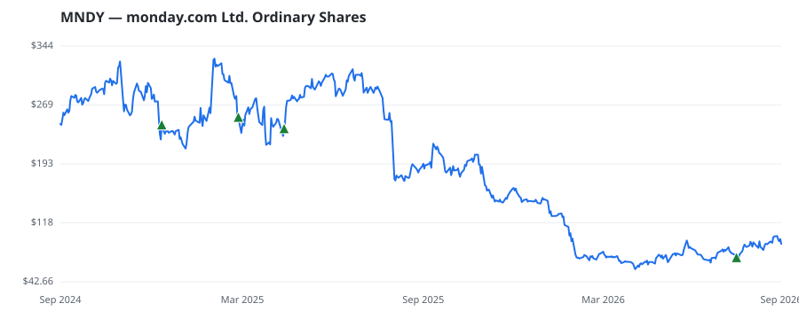

bullish · bearish · n/a — dots: price>SMA10 · SMA10>SMA50 · SMA50>SMA200 · up>down volume (20d)
Other · mid cap
Members who bought MNDY earned a dollar-weighted -45.6% from their disclosure dates, versus +27.6% for the S&P 500 over the same holding windows (-73.2% alpha).

▲ green = a disclosed purchase · ▼ red = a disclosed sale (plotted on disclosure date)
Monday.com Ltd is an artificial intelligence work platform that runs and orchestrates the core of all work. The platform democratizes access to software, including AI, enabling organizations to easily build applications and work management tools that fit their needs. The cloud-based platform is a no-code and low-code framework built from modular building blocks that are simple enough for anyone to use, yet powerful enough to drive core business across any organization. The platform also integrates with other systems and applications, creating a connective layer for organizations that links dep · website
| Member | Chamber | Out-performer | Disclosed buys $ | Return on buys |
|---|---|---|---|---|
| Rob Bresnahan | house | — | $16K | -65.8% |
| Michael Patrick Guest | house | — | $8K | -65.5% |
| Alan Armstrong | senate | — | $8K | +14.9% |
Disclosed $ figures are bracket midpoints — filings report ranges (e.g. $1,001–$15,000), not exact amounts.